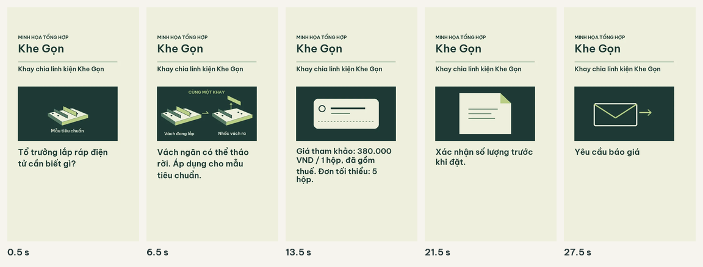

Hồ sơ giao việc Marketing
Giải nén toàn bộ rồi mở tệp này. Cuộn từ thông điệp gốc xuống bản đã biên tập, xem video, rồi theo biên nhận đến hồ sơ khách hàng tổng hợp.
PR #60 · Head 555b968c85b09d52d50d2fd165ea9ff320e5afcd · Trial cf2b976aea0642e60d20487d881dcab8c41b02db. Hồ sơ dùng cho thẩm định nội bộ. Production và Commercial GA vẫn NO-GO.
Khay chia linh kiện Khe Gọn
Nhận yêu cầu báo giá Khay chia linh kiện Khe Gọn. Đối tượng là Tổ trưởng lắp ráp điện tử.
Từ bản Content đến lời mở gửi người xem
Bản đầu của ContentCần kiểm tra điều gì?
Bản sau biên tập và QATổ trưởng lắp ráp điện tử cần biết gì?
Bộ phận Content giao một checkpoint bất biến. Câu mở, lời đọc và caption được sửa ở bản storyboard kế tiếp. Bản sau QA vẫn trỏ về digest Content 908442fd255add6afdc291113853e256684f7cc9e71dd805e22789f82dd3580a.
Bản dựng từ revision 2
Animatic minh họa dọc, 540 × 960, một khung hình/giây và im lặng. Hình ghi giá, thuế, MOQ và điều kiện được duyệt.
Mở video riêng · Mở phụ đề VTT · Mở landing tổng hợp

Chromium giải mã từng cảnh từ đúng tệp video trên.Theo một inquiry vào CRM
Hai run liên kết qua cùng tập nguồn kinh doanh đã ký. Run storyboard và run landing có manifest, phiên bản và QA riêng. Distribution nối đúng file preview với file landing và được người thứ hai duyệt. Receipt lưu digest chung và định danh hai manifest. Muốn tính lại digest chung từ toàn bộ trường nguồn của hai manifest, chạy lại ca PostgreSQL theo commit đã ghi.
| Chặng | Định danh trên cùng đường đi |
|---|
| Brief storyboard | e1308e40-4ab9-4cfb-977e-627e97032b0f |
|---|
| Manifest storyboard | dd240d81-d4f8-420d-8b8c-c0036cb99ff7 |
|---|
| Run Content → Storyboard | de72f72c-116b-43f8-b38a-31cd4455ca0e |
|---|
| Deliverable | a687fc66-5136-458c-b4fe-c4642e4c6070 |
|---|
| Receipt QA storyboard | 5a18e84e-9d22-4cc8-87ff-c57dc093ee1b |
|---|
| Distribution và QA preview | 22590ada-59ed-49c5-8411-1749b03cc67d / d17e4db4-0202-4bff-8d1c-5ca84968c6f2 |
|---|
| Run landing | d0aadb60-3a1f-4f62-a4f3-0a33c7414853 |
|---|
| Gói landing | dc703e18-0407-49d4-8cbc-00252d5f9185 |
|---|
| Visit | c0c10a9f-cef5-4581-87ba-19338db87474 |
|---|
| Submission | d375d3f1-7f0b-40cb-8245-765751fda3d7 |
|---|
| Hồ sơ CRM | c12a116adfac2ca6f80d1e6a27f8c51098aceb97a8fccd0e4f4329202026508b |
|---|
Mỗi ca ghi nhận 1 visit, 1 inquiry, 0 RFQ đủ điều kiện và 0 đơn. Khe Gọn chưa có KPI chính được duyệt. Cửa sổ đo đang dùng là approved_plan_lifetime. Số người hành nghề tham gia pilot bằng 0.
Scope, revision, source và digest từng tài sản · Kích thước video, timestamp mỗi frame và SHA ảnh giải mã
Brief mới và tình huống cần làm rõ
Chỉnh sửa và so sánh hook
Ca Phách Mở lưu bản nền, lần sửa có chủ ý và ứng viên thử riêng câu mở. Hai chế độ có cam kết khác nhau về timeline. Không phát quảng cáo hoặc phân bổ traffic.
Kiểm tra giao diện
Ảnh chụp từ phiên Chromium thật trên PostgreSQL. Ca giao diện dùng Thẻ so màu Mép Giấy và có receipt riêng. Ảnh Windows trên tablet cho thấy phần mô tả và điều kiện giá có mã nguồn riêng. Trên ảnh Content ở 390 px, nhãn F1/F2 có thể ngắt giữa chữ và số. Trên điện thoại, thông báo khi lưu bản đã cũ yêu cầu đối chiếu rồi nhập lại thay đổi. Mở từng ảnh để đọc ở kích thước gốc.
Kiểm thử và bàn giao
Ba job bắt buộc trên main sau #59. Với PR hiện tại, có bộ kiểm tra trên push head, PR head và trial merge. Kết quả tại từng checkout nằm trong JUnit và báo cáo bên dưới.
- HEAD, tree, kết quả native
- Lệnh và JUnit của 17 ca + full regression trên Windows
- Tải JUnit SQL/API, nhóm 17 và CI
- Chứng nhận GitHub Actions PR và lý do skip
- Chứng nhận main #59
- GitHub run, artifact ID và checksum tải về
- Kết quả trượt, lỗi môi trường và phạm vi sửa
- Bài tiếp quản từ checkout sạch
- Lệnh kiểm tra thực tế của người vận hành
- CONNECTED-CREATIVE.md
- CONNECTED-DISTRIBUTION.md
- EDITORIAL-AND-HOOK-TRIALS.md
- MEASUREMENT.md
- PRACTITIONER.md
- README.md
- WF08-CONTENT-HANDOFF.md
- Phép thử theo ID nguồn và tám đối chứng đổi thứ tự, sai liên kết hoặc sai lời gốc
- Đối chiếu R59-01 đến R59-05, phạm vi đã xử lý và phần còn mở
- Head, trial merge, hai parent và tree trên GitHub
- Hành trình @2 chạy lại độc lập trên trial merge
- Phiên trình duyệt trên trial merge
- native-ui-555b968c-repeat · Phiên trình duyệt Windows
- native-ui-555b968c · Phiên trình duyệt Windows
- Nguồn tài liệu tại đúng commit và SHA-256 của bản ngoại tuyến
- Journal trước sửa với ba lần gặp cùng xung đột policy
- Journal trên bản hiện tại cho đúng một lần thử
- Kiểm tra phát video và phụ đề khi mở gói ngoại tuyến trên điện thoại và desktop
- Công cụ Python chuẩn đối chiếu ID, QA, dữ kiện nguồn, VTT và receipt CRM
- Giải nén gói và chạy
python verify_journey.py artifacts/journey/wf08-v1 artifacts/journey/wf08-v2 từ thư mục có START-HERE.html để tự đối chiếu hai hành trình.
Mở file SHA256SUMS.txt để kiểm từng file. So SHA-256 của ZIP với verification.json trong bản bằng chứng trên GitHub.